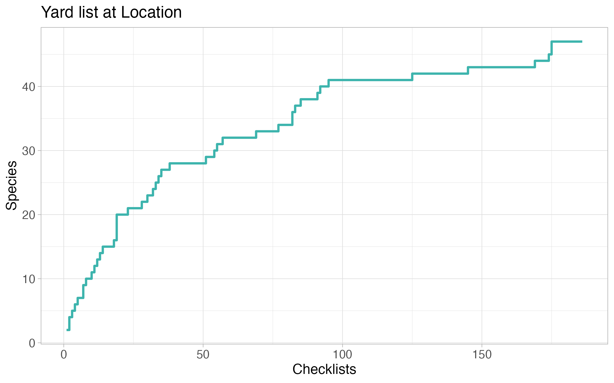

File Organization
First of all, you will need to export your eBird data. You will receive an email with a zip file. When extracted, your data will be in comma-separated format (.csv). Yardlistr will always choose the last .csv file in the data directory in ascending alphanumeric order.
This example illustrates file selection. Say you have the following three files in your data directory:
2022-08-02_ebird.csv
2022-06-01_ebird.csv
2021-04-16_ebird.csvIn ascending alphanumeric order, file
2022-08-02_ebird.csv is last and will thus be used by
yardlistr.
Plotting Data
Once your folder structure is set up, you can run yardlistr. The location name must be exactly the same as on eBird.
You can also set up a list with multiple locations and pass them to yardlistr one by one.
dir_input <- "./dir_data"
dir_output <- "./dir_plots"
list_locations <- c(
"My yard",
"My friend's yard",
"My local hotspot"
)
list_locations |> purrr::walk(
\(location) yardlistr::yardlistr(location, dir_input, dir_output)
)Species frequency
The frequency plot lists all observed species at the specified location in descending order with a bar representing the percentage of complete checklists that a particular species occurs in. Species only observed in incidental checklists have a frequency of 0.0%.

Heatmap
The heatmap plot is closely modeled after eBird’s bar chart. For a given species, it displays the percentage of checklists (complete and incidental) that species occurs in for each tetrad of the year. The higher the frequency of a species in a certain tetrad is, the darker the colour will be. Each month consists of four tetrads that comprise the following days of the month: 1st - 7th, 8th - 14th, 15th - 21st, 22nd - last.

Species per list
The species per list plot showcases the trajectory of number of species on your location life list versus number of checklists at the location. In some ways, it resembles a rarefaction curve.
